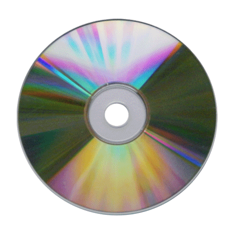
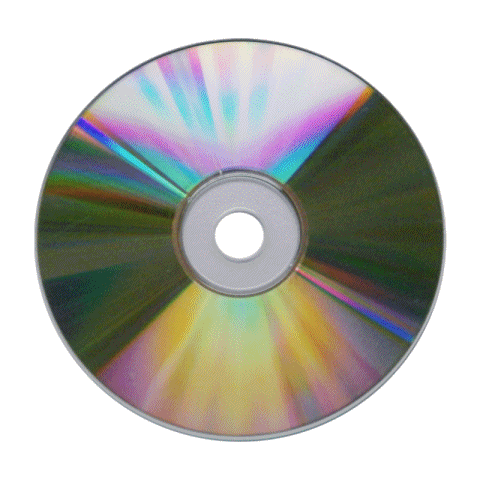

I am interested in constructing a custom instrument-device that sonifies+graphs parameters exposed by the FCC open data portal + atmospheric, terrain, and other conditions local to each node in the vast physical network of US telecommunications. The instrument close a recursive loop between space, sound, and transmission + integrate the performer/performance as a breakpoint.
To do this, I would design and fabricate a physical device (modeled loosely after an "etch-a-sketch") that allows a user to tune their device to "survey" a network of internet radio nodes. Tune along the interpolated lines between nearest nodes; rescale the map using sliders on the X and Y axes of the central "sketch" screen, which in turn adjusts sonic responsiveness between stations; switch between user-controlled scan/pan behavior and an auto-pan that creates an effect like finding yourself between stations on a road trip.
The instrument will be standalone 3D printed or CNC cut physical interface with simple OLED display that enables adjustment of the application's parameters with encoders and sliders. Most likely it will be driven by an Arduino microprocessor, although designing with discrete components on a printed circuit board would be a fun reach project.

 
